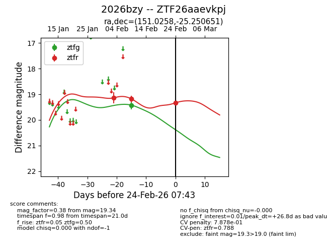
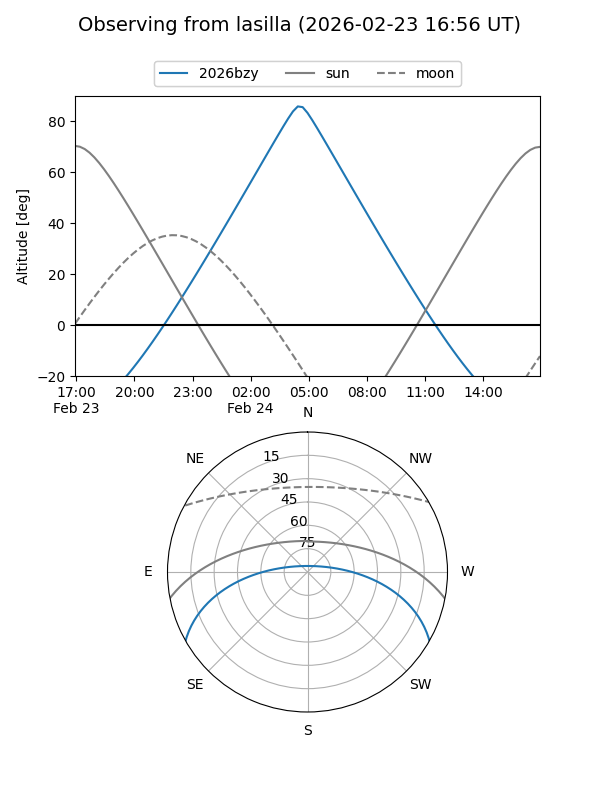
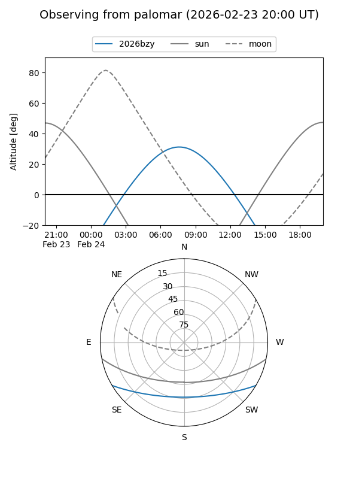

2026bzy
Target 2026bzy at 2026-02-24 09:08
Aliases and brokers:
FINK: link
Lasair: link
ALeRCE: link
TNS: link
YSE: link
alt names
ZTF26aaevkpj (ztf,fink_ztf)
2026bzy (tns,yse)
Coordinates:
equatorial (ra, dec) = 151.0258,-25.25065
equatorial (HMS+DMS) = 10:04:06.18,-25:15:02.34
galactic (l, b) = (261.6434,+23.90629)
Flags:
likely cv
Photometry:
last ztfg=19.43, ztfr=19.34
1 ztfg, 3 ztfr detections
Lightcurve

Visibility


Additional plots